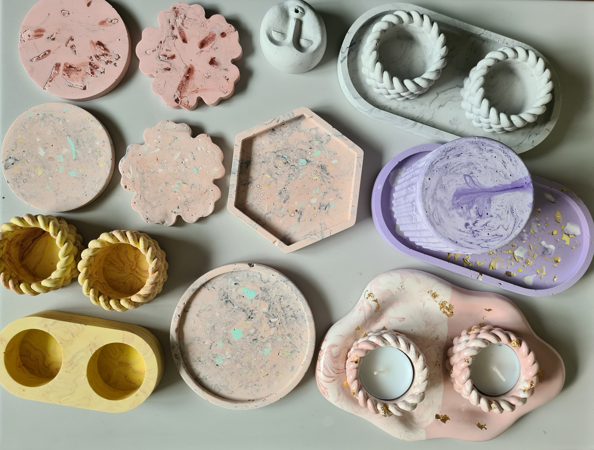

📍 Location: Rue Pré-du-Marché 23, 1004 Lausanne
🕖 Duration: 2.5 hours
💰 Price: CHF 50
You don't need to bring anything apart from your good energy and creativity! All the materials you'll need will be provided for you to create your own unique Jesmonite piece.
You will choose your mold — coasters, incense holders, Christmas ornaments, or a candle holder — and decorate it in your style, whether marble, terrazzo, or something entirely your own. You'll add a personal touch by selecting your favorite colors and design. While your creations are curing, we'll enjoy some tea and snacks together.
If you'd like to make larger pieces (like a vase or a Christmas tree tray) or create additional gifts, that's also possible for a small extra fee (+5–15 CHF, depending on the mold size). After about 2.5 hours of creating, you'll leave the workshop with your beautiful handmade piece in hand.